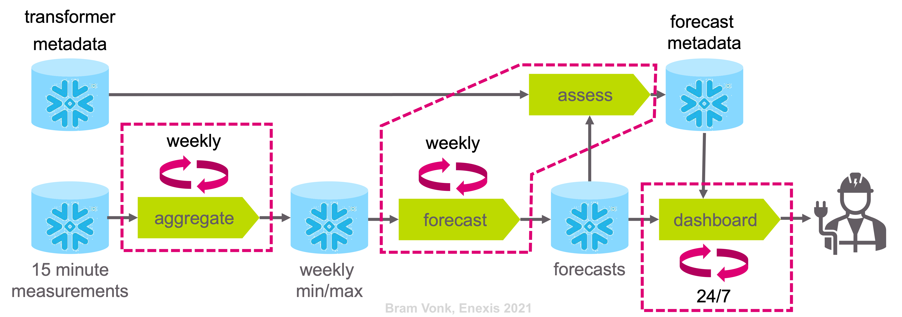
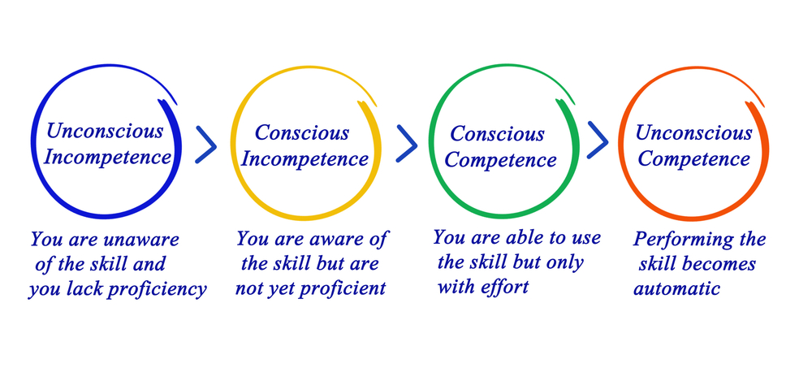
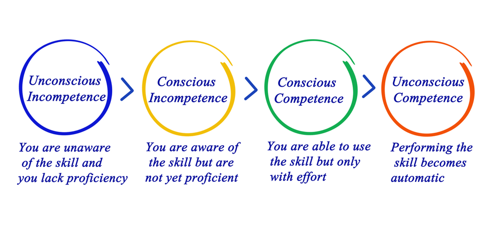

The Python project is structured simulary as Cookiecutter.
The code has been validated with linting by Black, isort, and Flake8.
Unit tests have not been written yet.
The project currently uses data from the Production environment, since there is no DALI (meta)data available on the Test or Acceptance environments.
Therefore, the further implementation of the CICD pipeline is postponed for now. Also since within Enexis Gitlab is used, but for this study project a parallel Github repository is used.
Within the Enexis domain one logs on to an environment (in this case Production).
Credentials for accessing the Snowflake database are acquired via Vault to keep secrets secure.
Docker files are written for following steps:

The steps are triggered via an entrypoint defined in the docker-compose.yml:
docker-compose.yml
docker-compose run update_extremes
Aggregates the 15-minute data into weekly minimum and maximum values per DALI-box. Only updates new data since the last run.
docker-compose run make_forecasts
Creates a tuned model for a DALI box with (high) enough measurements and makes a forecast with it. Currently, the results are stored all with the is_valid column on True. An extra run should be done to set this column to False for old forecast. Until then, one should empty the table beforehand.
is_valid
True
False
docker-compose run -p 8000:8000 dashboard
Will run the dashboard and expose it to port 8000.
The following technical actions are required for full deployment:
(Meta)data for a few DALI boxes is required on the Test and Acceptance environments.
The project will need an app number for to trace the costs.
The Gitlab CICD pipeline has to be configured.
The project needs to land in the Artifactory repository manager of Enexis.
Airflow DAGs have to be configured to trigger the jobs.
The end-users will eventually have to accept the product to go into Production. For that several end-user/stakeholder meetings are required to get valuable feedback and fine tune the product. During these meetings the project will be assessed against the success criteria.
Usage monitoring of the tool has not been implemented. However, it is important after deployment for value evaluation and life cycle management.
Monitoring of the triggered jobs will be done by connecting the Airflow job to a MS Team webhook. This automatically informs the Data Science Team if a scheduled job has failed.
The issue of model drift is obsolete, since every forecast is based on a newly trained model.
Monitoring of usage has to be implemented as mentioned above.
One can create a pdf version of this documentation via the following steps:
Clone the repository.
Run make latexpdf.
make latexpdf
This section covers my personal growth reflection on the Lead track of JADS.
Firstly, I will cover the objectives and criteria set by JADS.
Secondly, I will review my personal goals.
The general learning objectives for the Professional Education Lead track of JADS are:
Acquiring the knowledge and skills covered in the courses (technical and non-technical).
The most valuable courses were the non-technical ones. Partially, because there was maybe more to gain for me as a more technical character. But mainly, since they inspired me and enabled me to accept to embrace that skill set and also provided me with concrete tips to put it into practice. Some technical lectures (e.g. “from POCs to Production” and “A Primer in Data Engineering”) confirmed that the way of working and view on data science within my professional team is on the right track. Other technical courses (e.g. “Bayesian Nets”, “Recent Advances in A.I.”) inspired me and sparked an interest in new subjects. Those subjects are now on my personal bucket list for a technical deep dive in the near future. Concluding: I am convinced the courses in the Lead Track moved a good number of my skills towards the conscious incompetence and conscious competence levels.  The Conscious Competence Learning Model (source: pamelaslim.com).
The most valuable courses were the non-technical ones. Partially, because there was maybe more to gain for me as a more technical character. But mainly, since they inspired me and enabled me to accept to embrace that skill set and also provided me with concrete tips to put it into practice.
Some technical lectures (e.g. “from POCs to Production” and “A Primer in Data Engineering”) confirmed that the way of working and view on data science within my professional team is on the right track. Other technical courses (e.g. “Bayesian Nets”, “Recent Advances in A.I.”) inspired me and sparked an interest in new subjects. Those subjects are now on my personal bucket list for a technical deep dive in the near future.
Concluding: I am convinced the courses in the Lead Track moved a good number of my skills towards the conscious incompetence and conscious competence levels.

The Conscious Competence Learning Model (source: pamelaslim.com).
Leading and implementing an impactful data science project by use of the CRISP-DM process.
The described project of this documentation shows the result of that.
Forming individuals to enable them to make impact with data science.
The coaching from the educators of JADS helped me reassess my future career. The discussions with Jeroen about academic and engineering skills helped me appreciating my skills, my work and myself more. The coaching of Kyril helped me to form a clearer view on my career goals and how to get there. The highly effective presentation masterclass of Raoul helped me to reach goals more effectively.
The coaching from the educators of JADS helped me reassess my future career.
The discussions with Jeroen about academic and engineering skills helped me appreciating my skills, my work and myself more.
The coaching of Kyril helped me to form a clearer view on my career goals and how to get there.
The highly effective presentation masterclass of Raoul helped me to reach goals more effectively.
The evaluation criteria for the Professional Education Lead track of JADS and how I translated them are:
Business Value.
Use case selection. Stakeholder analysis. Stakeholder and expectation management. Value flow down diagram. Regular business review moments.
Use case selection.
Stakeholder analysis.
Stakeholder and expectation management.
Value flow down diagram.
Regular business review moments.
Programming.
Coding standards with Cookiecutter and linting (Black, Isort, Flake8). Using Sphinx for auto API documentation in GitHub. Interactive visualisations in Altair. Dashboard in Panel.
Coding standards with Cookiecutter and linting (Black, Isort, Flake8).
Using Sphinx for auto API documentation in GitHub.
Interactive visualisations in Altair.
Dashboard in Panel.
Data engineering.
Snowflake database preprocessing usage (asynchronous queries, ETL). Vault credential management. Docker (compose with entrypoint) for every process step.
Snowflake database preprocessing usage (asynchronous queries, ETL).
Vault credential management.
Docker (compose with entrypoint) for every process step.
Data analytics & machine learning.
Coding data management and model from scratch (since not using sklearn). Probabilistic modelling in PyMC3. Using Fourier and Taylor series in generalized additive model for time series forecast.
Coding data management and model from scratch (since not using sklearn).
Probabilistic modelling in PyMC3.
Using Fourier and Taylor series in generalized additive model for time series forecast.
Professional standard of reporting.
Using Sphinx for this documentation. Status slide deck after sprint review with end users. Project status / pitch and management summary for JADS peers and training.
Using Sphinx for this documentation.
Status slide deck after sprint review with end users.
Project status / pitch and management summary for JADS peers and training.
Academic / research skills.
Using the engineering approach (instead of the scientific method or the axiomatic system) to iteratively create and validate model and outcome.
Additionally, there were also my personal learning objectives:
Going through all the steps of CRISP-DM by myself (from Business Understanding to Deployment).
Better understanding of probabilistic modeling techniques (e.g. bayesian models, probabilistic tools).
Able to value my data skills and knowledge and creating traction / more confidence on flourishing as a data scientist.
One by one my personal learning objectives are fulfilled.
However, my conscious incompetence skill set has grown dramatically. So my new learning objectives are already there. (I will just have to order that backlog.)
This project is named Spark within Enexis.
But it has not just solely been named after the developer: Spa